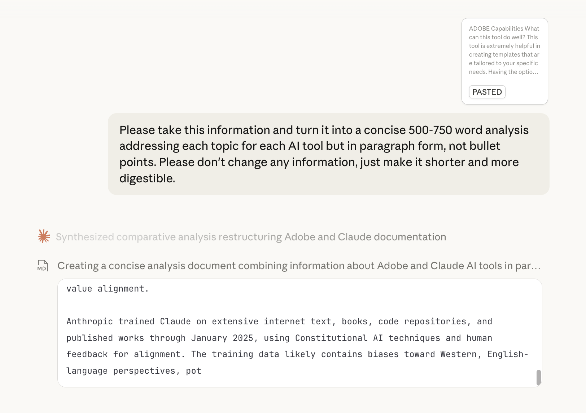

Introduction
This is an analysis of Adobe Firefly Express and Claude AI tools that covers there successes, pitfalls and my use of them throughout this lab.
Tool 1: Adobe Express
Adobe's generative AI excels at creating customized templates using written descriptions and visual inputs, generating designs that match uploaded images' colors and aesthetics. However, it cannot process multiple images simultaneously, lacks advanced editing for professional use, and struggles with more nuanced design prompts. Similar to Canva in basic functionality, it often ignores specific contextual requests, like when I tried "NYC boutique" and saw no change in the aesthetics. Output quality depends on prompt clarity. Vague inputs produce generic results, but overly specific prompts confuse the system. The tool works best for users seeking design inspiration but becomes counterproductive when original thought is required or extensive editing is needed. But when used correctly, Adobe serves as a time-saving brainstorming aid complementing human creativity. Adobe Firefly is based on ethically sourced content from Adobe Stock, openly licensed materials, and public domain works, respecting copyright while compensating contributors. This is the most ethical approach, but it may limit access to cutting-edge artistic styles. Adobe's AI Ethics Principles emphasize accountability, responsibility, and transparency, but gaps remain in explainability to users. Many users cannot fully audit AI decisions, which makes content verification challenging, especially when the AI is used to generate designs.
Tool 2: Claude
Claude is best used for text generation, writing, coding, analysis, and problem-solving. It offers web search, document creation, code execution, and interactive content development with customizable writing styles and memory features. Limitations include internet access restricted to web search, a January 2025 knowledge cutoff, and occasional "hallucinations" producing false information, especially with specific facts or calculations. Prompt quality dramatically impacts results. Clear, specific requests with context always outperform vague inquiries and feedback and editing is also beneficial. It excels at learning support and brainstorming but proves inappropriate for high-stakes decisions requiring guaranteed accuracy in medical, legal, or financial contexts. It also cannot produce human empathy, emotion, or creativity. Within workflows, Claude accelerates productivity by handling initial drafts, research, and repetitive tasks while humans focus on refinement and judgment. I tested it by asking it questions like “Please explain your limitations” and “Please respond in bullet points,” then “Please turn that into short paragraphs.” It was extremely responsive and flexible so I used it to help me write this analysis. I provided it with almost 800 words of research and analysis and gave it this prompt: “Please take this information and turn it into a concise 500-750 word analysis addressing each topic for each AI tool but in paragraph form, not bullet points. Please don't change any information; just make it shorter and more digestible.” Using Claude in this way was the perfect test of its capabilities. It accelerated my workflow but I gave it context and information and have edited its response heavily. Anthropic trained Claude on internet text, books, code repositories, and published works through January 2025 using Constitutional AI and human feedback, though this training likely carries biases toward Western, English-language perspectives that underrepresent marginalized viewpoints. The intellectual property situation remains murky. It's unclear who owns AI-generated content, and using Claude without disclosure in academic or professional settings raises authenticity concerns and risks homogenizing writing styles. While Anthropic has built-in safeguards to refuse harmful requests and prevent misinformation, gaps remain: Claude can make confident-sounding errors, be manipulated through clever prompting, and can't detect when it's reinforcing user biases, making human oversight essential.

Broader Reflections
I use and imagine I will continue to use AI tools to help accelerate workflows and help explain things that are unclear to me. AI might replace some of the more basic jobs in the workforce, especially in data analytics but there will always be a need for human oversight. AI is extremely helpful in learning how to code but can sometimes do too much to the point where it is doing the work for you. In the future I would be curious about how a new AI tool could help me with more specific tasks like merchandise planning.